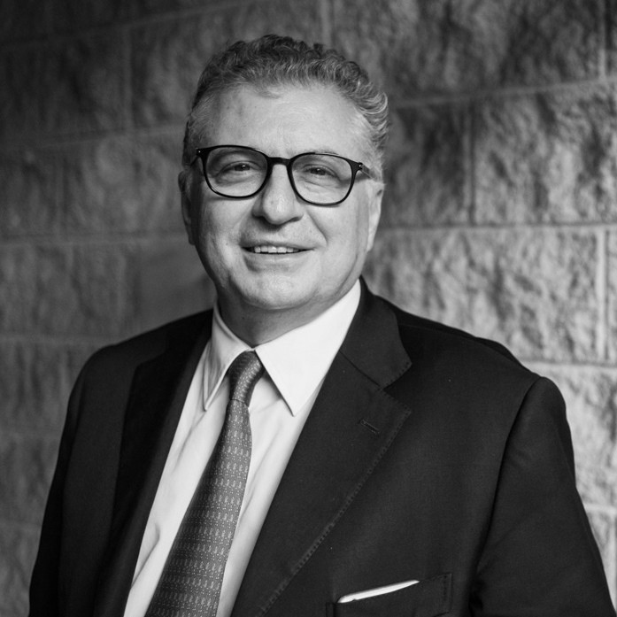
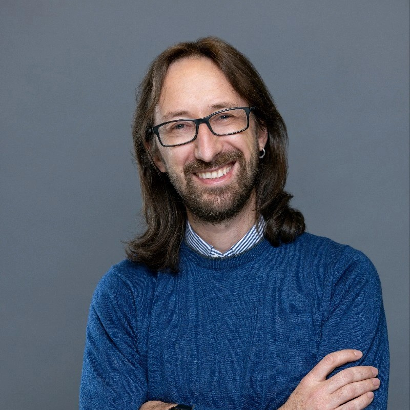
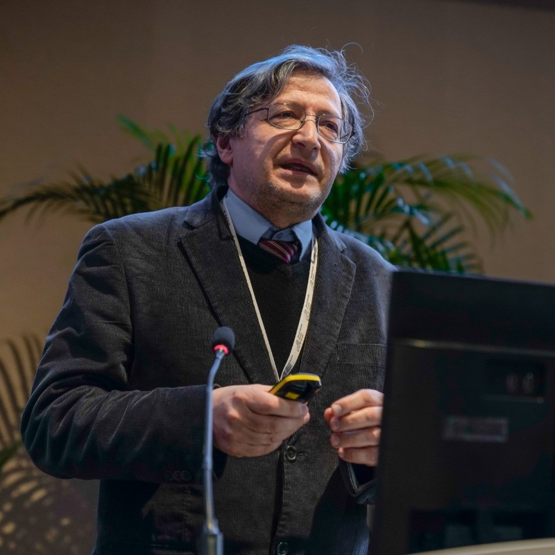
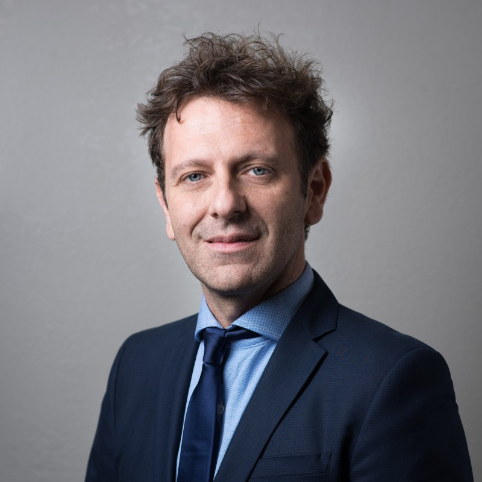
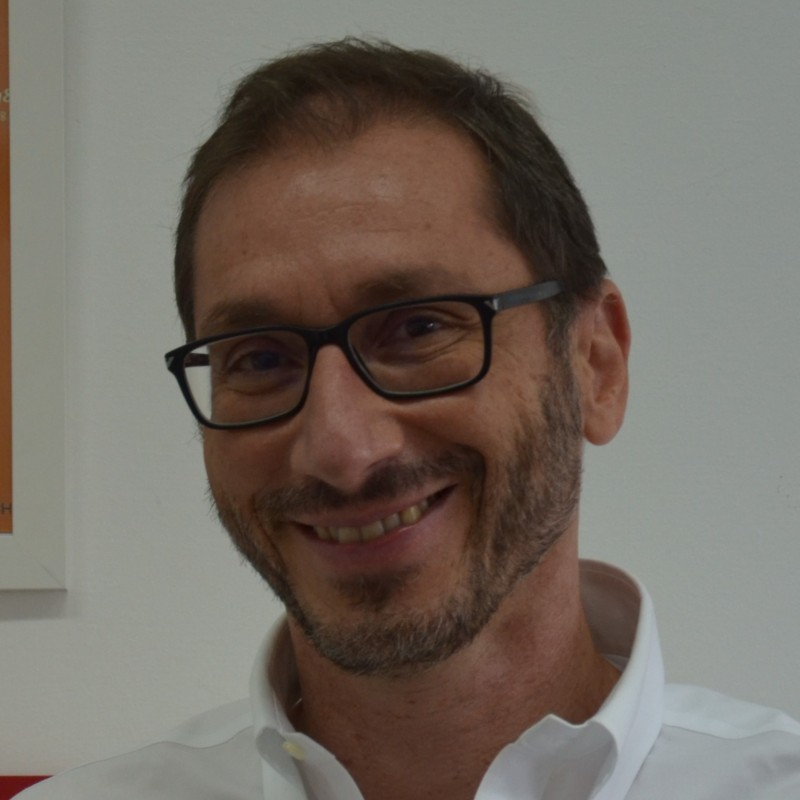

Our SPEAKERS

Giuseppe Novelli
Giuseppe Novelli è riconosciuto a livello internazionale per il suo contributo nella ricerca scientifica sulle malattie complesse. Ha individuato importanti loci coinvolti nella psoriasi, e un'isoforma del recettore LOX-1 chiamata "loxin" coinvolta nell'aterosclerosi.

Simone Bianco
Tarantino, 45 anni, è Principal Investigator e Director of Computational Biology agli Altos Labs, una startup con 3 miliardi di finanziamenti per migliorare gli ultimi anni della vita umana, contrastando le malattie tramite la "riprogrammazione cellulare parziale".

Pietro Lio
Full Professor del dipartimento di Computer Science and Technology alla Cambridge University. Il suo campo di ricerca è sviluppare modelli di intelligenza artificiale e biologia computazionale per comprendere la complessità delle malattie.

Vittorio Sebastiano
Scienziato e ricercatore indipendente con una comprovata esperienza di lavoro nelle più alte e prestigiose
istituzioni accademiche del mondo. Esperto in cellule staminali, biologia dello sviluppo, biologia
molecolare, ingegneria dei tessuti, editing del genoma, colture cellulari e immunoistochimica.

Giuseppe Farinola
Chimico organico sintetico che ha dimostrato come sia possibile utilizzare microstrutture di silice estratte dalle alghe per ottenere nanomateriali per la fotonica, la biomedicina e i nanodispositivi intelligenti per il recupero ambientale.
Velia Siciliano
Nel laboratorio della dottoressa Siciliano vengono ingegnerizzate nuove funzioni delle cellule del sistema immunitario prelevate da pazienti inserendo nuove ‘parti’ (Rna e Dna) per rendere le cellule stesse in grado di riconoscere ed eliminare cellule infette o cellule tumorali.